Acordei no Hotel Livramento, e desci para o café da manhã, que funciona em um restaurante ao lado. O rango estava legal, alguma variedade de comida, sucos e iogurte.
Voltei ao hotel, desci com as malas e peguei a moto no estacionamento. Enquanto eu amarrava a bagagem na motoca em frente ao hotel, um rapaz que fumava um cigarro me observando veio falar comigo. Era o dono da moto Honda Africa Twin, que estava no estacionamento do hotel ao lado da minha. Na verdade eram duas motos dessas, a outra que não estava na véspera estava lá agora.
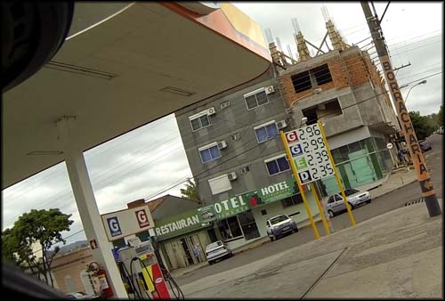O Hotel Livramento é aquele modesto prédio cinza. À esquerda onde tem o café da manhã. No posto de gasolina onde estou, fica o estacionamento
O cara é português, se chama Luis Filipe Lourenço, e viajava por toda a América do Sul. Quando tem férias, ele e um amigo - que não havia chegado ainda por causa de um vôo atrasado - pegavam as motos que ficavam paradas no Uruguai e partiam para as aventuras pela América do Sul.
Dessa vez a moto estava lá parada há um ano, e ele foi antes pro Uruguai para colocá-las para funcionar, trocar óleo, etc. Me contou das aventuras que teve, para onde ia, muito legal, os caras já rodaram muito! O próximo destino deles seria até a Amazônia. Pena que eu só o conheci naquele momento em que tinha pressa de partir para a minha própria aventura, teria rendido um bom papo de bar.
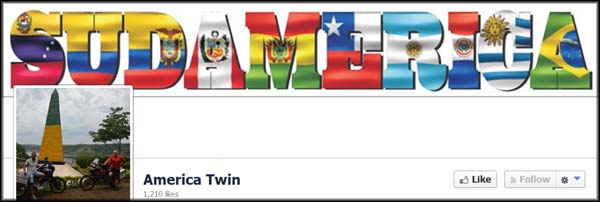Página do Facebook deles, muitas viagens
Peguei os contatos do aventureiro, eles colocam fotos das viagens no Facebook na página America Twin. Bem legal.
Me despedi e abasteci logo em frente ao hotel (2.910 Km rodados). Parti em direção ao Uruguai. Não sabia exatamente onde ficava a Aduana para fazer a comunicação de entrada no país, mas sabia que era perto de um estádio de futebol. Acabei encontrando facilmente, após gastar meu portunhol em um posto de gasolina.
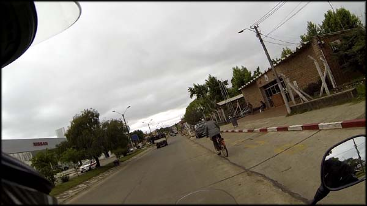Aduana em Rivera, essa pequena construção com tijolinhos
Estacionei na Aduana, e entrei nas instalações, meio nervoso. Seria mal tratado? Iriam implicar com alguma documentação?
Que nada, o senhor que atendia era simpático e falava português fluentemente. Carimbou meu passaporte, anotou no computador os dados da motocicleta, e ainda me deu um mapa turístico com as rodovias do Uruguai, e pronto. Ainda me perguntaram se eu estava com agasalhos a mais, porque estava muito frio na direção para onde eu iria. Em menos de dez minutos estava subindo na moto de novo. Agora animei!
Tinha visto no mapa, e pela distância, seria razoável em questão de distância eu dormir em Durazno, bem no centro do Uruguai. Aquelas horas ociosas em Santana do Livramento serviram para eu pesquisar alguns lugares para conhecer naquele país, além dos já tradicionais pontos turísticos.
Em Durazno eu esperava encontrar uns lugares com lindas praias de rio, vi algumas fotos na internet e achei que iria ser divertido (chegando lá não achei legal e nem parei pra tirar fotos e conhecer melhor).
Desci pela Ruta 5, estrada com pavimento muito bom, e, como eu constataria depois, muito comum no Uruguai.
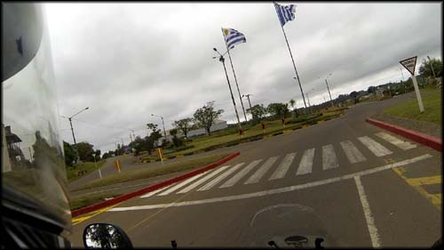Oficialmente rodando em terras estrangeiras, procurando a Ruta 5
Passei por um posto de gasolina, e resolvi abastecer (3.091 Km rodados). Fui atendido por uma menina simpática, mas que não entendia muito bem o que eu falava, e eu tentando entendê-la também. Tentei puxar assunto, mas ela parecia tímida por não estar me compreendendo, e ficava pedindo ajuda a outros funcionários. A grafia de algumas palavras em português e espanhol é até parecida, mas a pronúncia muda muito, eu senti dificuldade. Fui até uma máquina de café, e a menina ainda me ajudou trocando uma cédula por moedas, que eu não tinha, e tentou me responder quando eu perguntava sobre os lugares que queria passar.
Nisso chegou um motociclista com placa do Uruguai, com quem puxei conversa. Ele voltava para Montevideo, onde morava, mas não consegui entender de onde ele vinha no Brasil. Me indicou colocar a gasolina Super 95, e disse que rodasse despreocupado porque o país era muito seguro. E achou graça depois que descobriu que eu viajava em uma moto 250cc. Ele ficou por lá no posto, e eu segui meu caminho.
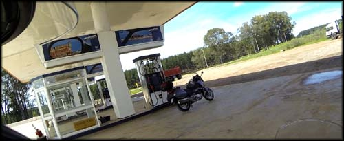Moto do uruguaio que conheci, não sei qual é, mas parece confortável
Logo depois que retomei à rodovia, dei de cara com uma blitz da Polícia local, uniformes azuis. Um deles me mandou encostar, outros dois ficaram olhando. Começou a fazer várias perguntas em um espanhol rápido, cara de mau humorado mas sem ser grosseiro. Eu não entendia muito bem o que ele queria saber.
Eu estava com a câmera GoPro filmando no capacete, e ele perguntou algo como "essa câmera é pra me filmar?". Falei que até tinha esquecido que a câmera estava lá, mas era para filmar as paisagens, etc.
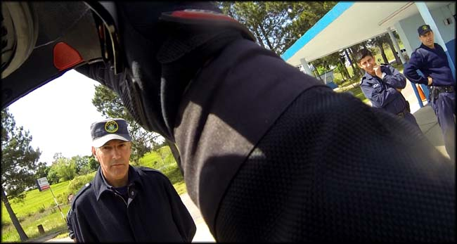Primeira abordagem policial no Uruguai, os caras são tranquilos
Então ele perguntou se eu estava com todos os documentos, o que eu levava nas bolsas, e eu me enrolando lá com meu portunhol de quinta categoria. Me liberaram, não precisei mostrar os documentos, e fui embora rapidinho. E quando eu já estava saindo, passou por nós aquele motociclista uruguaio, que todavia não foi parado.
Segui meu caminho, apreciando as paisagens, nada muito diferente do sul do Brasil, mas as placas em espanhol já serviam para me mostrar que eu estava longe de casa.
Passei pelo primeiro de não muitos pedágios nas rodovias do país. Em nenhum deles motocicleta precisa pagar. Sempre tem um corredor com placas indicando a passagem de motos. Finalmente poderia viajar sem ficar parando para catar moedas, tendo que tirar luvas, aquela dificuldade. Muito mais sensato.
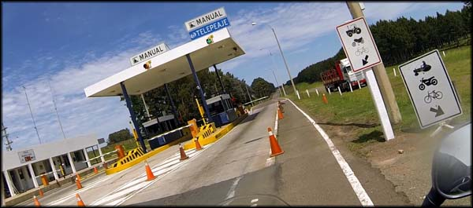Praça de pedágio no Uruguai. Motos não pagam, ufa!
Continuei, e chegando em Tucuarembó fiz meu primeiro desvio da Ruta 5. Entrei na cidade, com casas bem humildes, bem rural. Era horário de saída da escola, muitas crianças nas ruas, o sol ajudava a enfrentar o frio seco que fazia. Cruzei a cidade e peguei a Ruta 26 para ir ao Valle Edén, indicado em um fórum de viagens que li.
Percebi que eu havia passado de outro lugar que queria ter visitado, o Balneário Iporá, mas tudo bem. Não tinha muita ideia da distância que percorreria na Ruta 26 até chegar ao Valle Edén, então fui pilotando e prestando atenção nas placas. Rodei por um bom tempo, asfalto bom, mas não passei por nenhum carro, caminhão, nada.
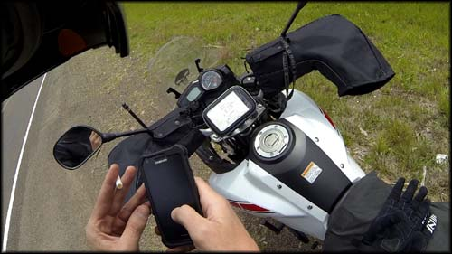GPS do celular, mapa impresso... ainda assim enrolado...
Quando vi estava com o combustível bem abaixo do limite que eu me impus para abastecer. Pensei, vou rodar só mais 30km, se não chegar nada, eu volto. 30km depois, nada. Parei a moto no acostamento, olhei no GPS do celular... não consegui entender bem onde eu estava em relação ao tal do Valle Edén. Decidi que deveria voltar. Recoloquei as luvas, capacete, liguei a moto... ah, não, vou seguir mais umas duas curvas e daí eu volto. Que sorte, depois da terceira curva na estrada (minha intuição me arrastou mais um pouco...) lá estava a placa, "Valle Edén", apontando para uma estrada de chão.
Offroad, vamos lá. Fui rodando e explorando, cruzei uma linha de trem, e finalmente avistei uma ponte sobre um rio, que eu tinha visto em fotografia na internet. Parei para tirar fotos, e próximo havia uma escultura branca. Ora, era uma homenagem de motoclubes a companheiros falecidos, placas com nomes dos amigos perdidos. Isso minha pesquisa não tinha indicado haver ali, achei muito bacana e uma ótima surpresa e coincidência, pois quem me indicou não é motociclista.
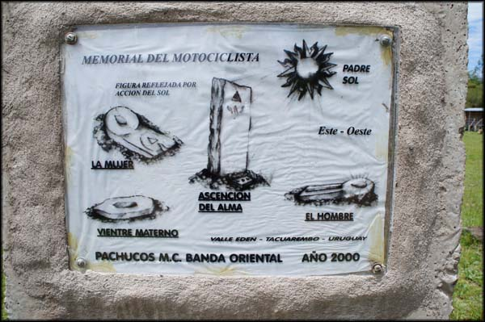Memorial del Motociclista no Valle Edén
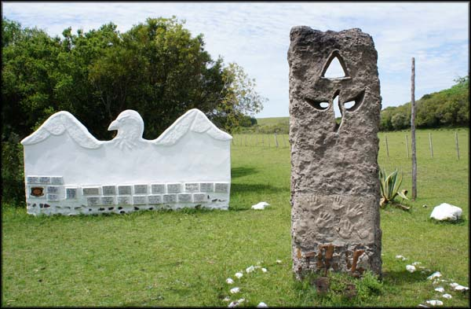Naquela "águia", cada placa tem um nome de motociclista falecido (não diz a causa)
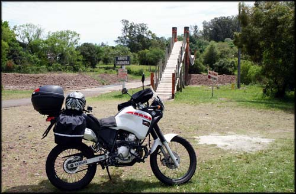Ponte de madeira sobre o 'Arroyo Jaboneria'
Segui mais um pouco depois, já sem saber o que iria encontrar. Havia o Museu Carlos Gardel, mas estava com cara de fechado, resolvi nem tentar entrar.
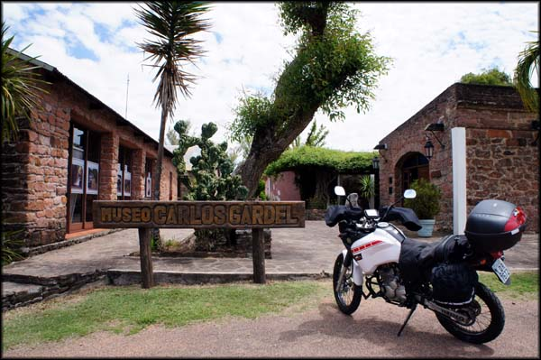Museu Carlos Gardel
Voltei para a estradinha, começou um offroad mais violento, com pedras de novo... fui seguindo, atravessei de novo linhas de trem, passagens de concreto meio que submersas nos rios, até que depois de subir por um tempo pude avistar que a estradinha de chão iria loooonge.
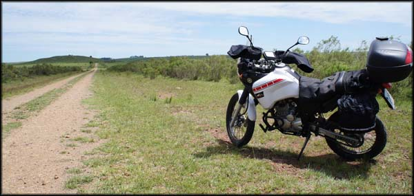Estradinha de chão interminável. Quase certeza sairia na Ruta 5 de novo
Na verdade eu depois percebi que, provavelmente, seguindo até o final, eu sairia de novo na Ruta 5, a qual eu retomaria de qualquer forma. Mas na hora não tive certeza, e o combustível já estava bem baixo, prestes a entrar na reserva da moto (calculo que eu teria menos de 150km de autonomia). Resolvi voltar e encerrar aquela parte do passeio, por puro cagaço de escurecer e eu estar no meio daquela enorme área rural sem gasolina.
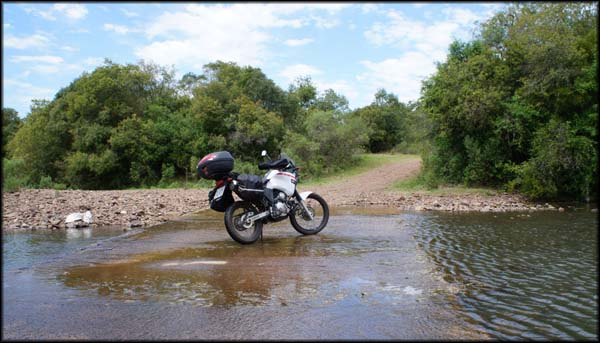A estrada off road era interrompida volta e meia por cruzamentos de rios sobre asfalto, visual bem diferente
Voltei todo o caminho, atravessei Tucuarembo de novo, para retomar a Ruta 5 e seguir em frente. Porém dei de cara com uma blitz dos Caminheiros, a polícia rodoviária uruguaia. Um dos policiais me viu de longe, e quando me aproximei fez sinal para eu parar.
Parei no acostamento ao lado e desci da moto. O policial me cumprimentou, perguntou de onde eu vinha, para onde iria. Pediu minha documentação, e eu entreguei o documento da moto, habilitação e a Carta Verde. Quis entregar meu passaporte também, mas ele disse que não precisava. Ficou um tempo lendo e verificando, conferiu a placa da moto e o estado de conservação. Enfim, me desejou boa viagem e disse que eu poderia ir. Muito tranquilo.
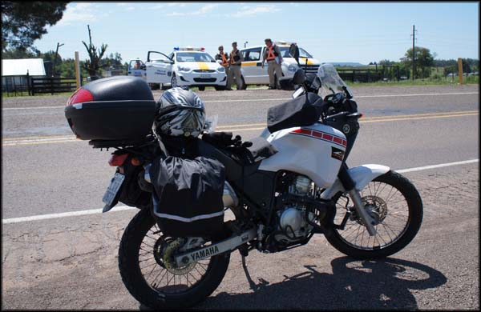De novo parado pela Polícia. Tudo tranquilo de novo. Depois dessa não fui mais parado.
Continuei pilotando, e o marcador de gasolina já piscava insistentemente. Nem tinha rodado tanto para o combustível estar naquele nível. Os fortes ventos estavam acabando com minha média de consumo.
Continuei na Ruta 5, paisagens muito similares àquelas dos pampas gaúchos por que passei. Um enorme campo com usinas eólicas deixava evidente que na região de fato venta muito.
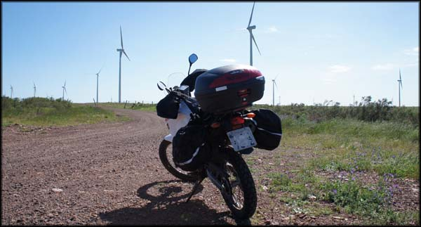Enorme área com captação de energia eólica a caminho de Durazno
Até que finalmente cheguei em Durazno, onde abasteci de novo no primeiro posto que vi. Outro tanque de gasolina foi consumido sem que eu tivesse rodado muitos quilômetros (3.292 Km rodados). Acho que a gasolina diferente e os ventos fortes é que estavam aumentando tanto o consumo da motoca.
Comecei a rodar pela cidade, procurando alguma placa de hotel. Rodei, rodei, e nada. Já estava começando a escurecer, um frio danado. Passei em frente a uma loja de material de construção, e resolvi parar e tentar perguntar em portunhol. Um cara me atendeu, eu já falei logo que "não hablo espanhol" haha mas ele teve paciência. Tentou me explicar onde tinha um hotel, mas ele mesmo estava em dúvida. Daí perguntei se ele saberia o nome da rua pra eu colocar no GPS.
Ele sabia, eu coloquei lá, agradeci, e fui embora. Segui o trajeto do GPS, acabei numa rua já bem às margens da cidade, em uma espécie de favelinha esquisita, com alguns barracos. Passei de uma ponta a outra da rua, nada de hotel, nada de nada.
Voltei para o que eu achava ser o centro da cidade, parei em frente a uma rodoviária, onde havia uma placa "información turística". Fui até a cabine, mas não havia ninguém, estava fechada.
Ao voltar para a moto, dei de cara com uma cena que me abalou. O pneu traseiro estava murcho, quase que totalmente vazio. Que porcaria, acabei de chegar em outro país, estou cortando um dobrado para achar hotel, não entendo nada da língua, está escurecendo, e agora mais essa!?
Eu ainda tinha um tubo do reparador de pneus, mas nem quis usar. Tinha um cara esquisito que ficou me olhando, acho que era um “flanelinha”, sei lá. Voltei a rodar devagarzinho, com o pneu vazio, jogando o peso para frente na moto, na esperança de passar por algum lugar com cara de borracheiro.
Após alguns minutos, passei em frente a uma motopeças, e resolvi tentar ajuda ali, na Aguilar Motos. Havia dois garotos fazendo o conserto de uma moto dentro da loja, e um terceiro veio me atender. Já disse logo que "não hablo espanhol mui bem", essas coisas. Ele foi bem paciente, expliquei que estava com pneu furado e queria consertar, se poderia indicar um borracheiro próximo. Com dificuldade, ele entendeu, e falou alguma coisa com os outros que lá estavam. E eu aprendi que pneu em espanhol é "neumático".
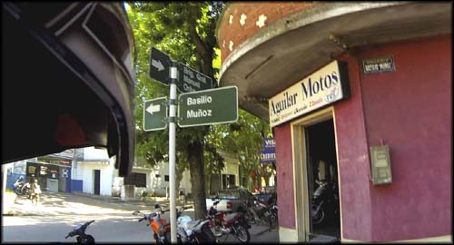Aguilar Motos, grande ajuda recebi, obrigado!
Só que eu, ansioso, perguntei se ele também não vendia o reparador de pneus, já que por mais que eu ainda tivesse um, queria repor o que já tinha usado em Joinvile, caso precisasse novamente. Então, deixei-o confuso. Ele não entendia se eu queria comprar o reparador, ou queria um borracheiro para consertar o pneu! Até que eu consegui me fazer entender, queria os dois. E, aproveitando, se pudesse me ajudar dizendo onde eu acharia um hotel para pernoitar...
O cara foi muito gente boa, Álvaro o nome dele. Me falou para segui-lo, entrou no carro, e assim o fiz. Ele parou em frente a uma borracharia grande, vários caminhoneiros consertando pneus e batendo papo, e explicou pros caras o que eu queria. Mandaram eu entrar com a moto, todo mundo me olhando, como se fosse um ser de outro planeta.
Rapidamente já veio um deles com um elevador para suspender a traseira da moto, e começaram a desmontar, todos falando em um espanhol acelerado, eu simplesmente não entendia nada. Um veio conversar comigo, aquelas curiosidades sobre a moto, se era 600 cilindradas ou mais potente, qual velocidade máxima... eu estava muito perdido.
Antes mesmo de acabarem de desmontar a roda, Álvaro me chamou e disse que me levaria no carro dele para eu ver aonde ficava o hotel, depois me deixava lá de novo para eu pegá-la.
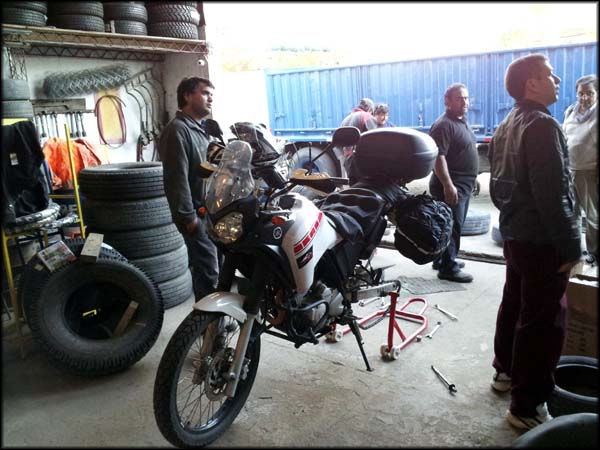Segundo pneu furado na viagem. Dessa vez no interiorzão do Uruguai
Tá louco, pensei. Vou deixar minha moto com todas as bagagens, câmera, tudo que eu tinha, com aquele pessoal esquisito, todo mundo sujo de graxa, bem oficina mesmo? Mas, diante da situação, resolvi que deveria arriscar. Perguntei "mas é seguro, eu sou do Rio de Janeiro, lá não tem como fazer isso, perigoso...". Ele ficou rindo, disse que era tranquilo, que ninguém mexeria nas minhas bagagens. Liguei o "foda-se" e fui com ele no carro, olhando a moto dentro da oficina, e torcendo para encontrá-la intacta quando voltasse.
Primeiro ele me levou em um hotel com aspecto luxuoso. Perguntei se ele saberia o preço, disse que deveria ser uns 80 dólares, ou algo assim, não lembro bem. Aquela altura já me sentia amigo do cara, e tive a cara de pau de perguntar se ele não saberia de um lugar mais barato. Ah, aí ele disse que eu não deveria procurar por hotel, mas sim por "hospedaje", que eu repeti erradamente e ele ficou tentando me ensinar a pronúncia correta.
Me levou então na Hospedaje del Centro, disse que ali seria mais barato. Eu anotei o endereço, e voltamos para a borracharia.
A primeira coisa que fiz foi dar uma olhada discreta nas bolsas da moto, aparentemente ninguém mexera em nada mesmo. O cara me mostrou o pequeno furo na câmara de ar, e uns restos de plástico branco que devem tê-lo provocado. Mesma estória do pneu da frente, maldito código do produto na parte interna do pneu Maggion, que o cara que montou não teve a manha de lixar.
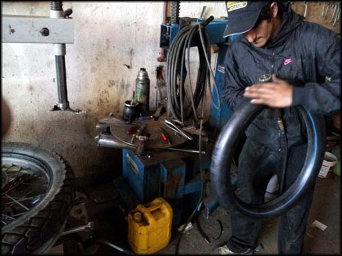Conserto da câmara de ar, o cara me esperou antes de fazer o serviço para me mostrar o furo. Honestidade.
O serviço ainda demorou um tempo, e fiquei lá tentando responder às perguntas dos curiosos a respeito da moto, mas todos muito simpáticos e interessados. Não me sinto confortável sendo o centro das atenções, mas a situação era bem engraçada e eu me diverti.
Quando acabou o serviço, perguntei "quanto custa", e o rapaz me disse que era para perguntar para o outro, que pelo jeito era o chefe. Pensei "ferrou, agora vão me extorquir. Se no meu país, na região sul, onde eu tinha a percepção de que as pessoas eram mais educadas e honestas, um me cobrou 30 reais só para olhar, e outro consertou por 25 reais, aqui vou morrer em pelo ao menos 50 reais!". Perguntei pro outro "quanto custa?". Ele respondeu "100 pesos". Putz, 100 pesos uruguaios, com o câmbio que eu fiz, dava o equivalente a R$ 10,40! Me senti roubado no Brasil.
Até queria ficar mais tempo lá, acostumei com o ambiente e vi que estava seguro, mas precisava ainda ver se conseguiria hospedagem, quer dizer, hospedaje! Eu já estava tranquilo com a cidade, mas não tinha onde dormir ainda, e o frio estava aumentando. Assim como minha vontade de beber uma cerveja para comemorar mais um ponto alcançado na trip.
Peguei a moto, agradeci, e voltei na Hospedaje del Centro. Entrei, e uma menina me atendeu. Tinham quarto coletivo ou privado. Falei que queria o privado, que saía por 400 pesos. Fui ver o quarto, mobília bem velha, mas era limpo e amplo, resolvi que ficaria, afinal nem tinha pra onde ir mesmo.
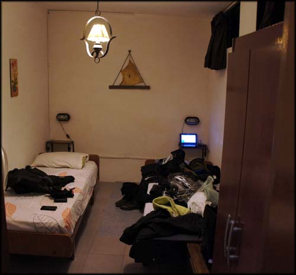Quarto simples, mas tinha cama e chuveiro com água quente, só o que eu precisava. E a bagunça habitual das bagagens espalhadas.
A menina, que se chamava Mabel, me levou para guardar a moto em uma garagem na rua ao lado. Subi com as bagagens pro quarto e pratiquei o ritual de tirar tudo das bolsas, dos sacos plásticos... e fui tomar um banho pra ir pra rua a pé.
Voltei na recepção, a lareira já estava acesa, percebi que o frio ali é comum. Tirando a chuva que eu peguei em Caxias do Sul, era a temperatura mais baixa que eu pegava na viagem. Perguntei onde poderia comer aquela hora, e em uma conversa tecnicamente difícil e engraçada, pelo pouco entendimento conjunto de línguas, Mabel e um senhor que acho que era hóspede também me indicaram um lugar.
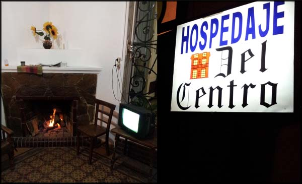Lareira na recepção com mega TV passando jogo. Fachada da Hospedaje del Centro
Fui andando a pé, e dois quarteirões depois estava em uma rua comercial, com muitas lojas, todos acesas, bonitas. Fechadas, mas só por portas de vidro, com placas de "Cerrado". Muito diferente do Rio, onde as lojas são protegidas por grades de ferro, alarme e o que mais puder dificultar a ação de delinquentes.
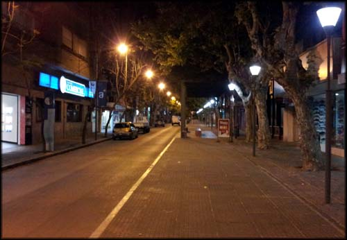Ruas desertas...
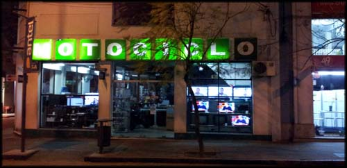Lojas fechadas, mas sem grades. Clima de segurança.
Achei um restaurante, mas com cara de muito chique pro meu gosto e pro meu bolso. E vazio, meio deprê. Continuei andando, conhecendo, vi um trailler escrito "El Gaucho". Tinha um pessoal lanchando, mas passei direto, resolvi ver o que mais tinha na região.
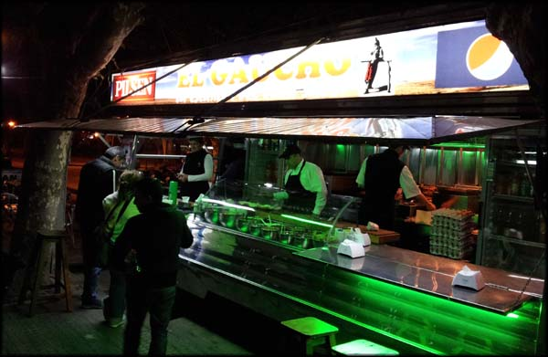Trailler El Gaucho
Passei por uma grande praça, vários grupinhos de jovens conversando, um ambiente tranquilo. Uma viatura da Polícia estacionada, os policiais conversando, ficaram me olhando e logo perceberam que eu era de fora, não se preocuparam.
Andei mais um pouco, não encontrei mais restaurantes, e com tudo mais fechado, voltei no El Gaucho. Por sorte já estava vazio de clientes, e pude pagar menos mico tentando entender o que eram as comidas. Fui muito bem atendido, o rapaz da chapa me explicou e pegava os produtos para me mostrar quando eu não entendia o que era. Nunca tinha imaginado alguém me mostrando um pedaço de queijo e dizendo o que era. Escolhi no cardápio e provei pela primeira vez o Chivito, um sanduíche com bife, ovo baicon e mais uma penca de coisas, quase um "X tudo". E bebi duas 'cervezas' Pilsen por 210 pesos tudo. Gostei.
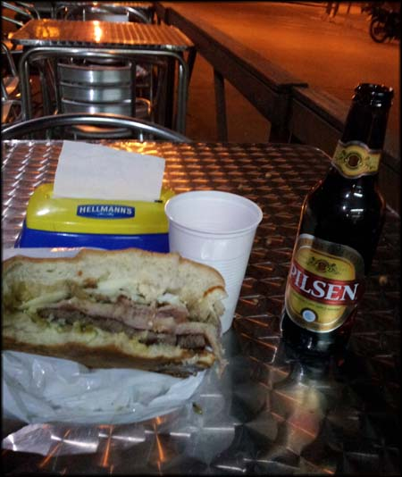Chivito no El Gaucho com cerveza Pilsen. Bom jantar.
Voltei pra hospedaje, "conversei" um pouco mais com Mabel e outro hóspede que lá estava, e fui dormir. No dia seguinte, o destino seria Colonia del Sacramento! E a distância não era pouca.
Já sabia onde ficaria em Colonia, consegui hospedagem por meio do site Couchsurfing. Um cara chamado Israel aceitou me receber. Era a primeira vez que iria pra casa de outras pessoas, desconhecidos, durante a viagem. Estava receoso, mas animado. Já havia recebido no Rio, por meio do mesmo site, um casal de franceses que estavam há um ano viajando pelo mundo todo. Tinha certeza que seria tão bem recebido quanto me esforcei para receber outras vezes.
Fui dormir com uma grande expectativa, afinal iria começar a rodar pela parte mais "turística" do Uruguai, e ver ao vivo algumas coisas que tinha visto por fotos. E também agradeci minha falta de planejamento, motivo pelo qual acabei conhecendo essa parte tão interior, tão rural do Uruguai, da qual eu não tinha lido ninguém falando em viagens de moto ainda.